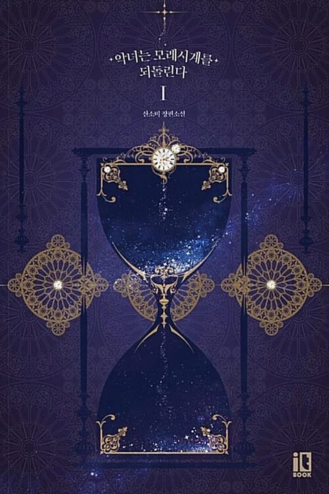

The Villainess Reverses the Hourglass
Synopsis
A girl condemned as a villain returns to the past, determined to take revenge on the sister who framed her.
The Falling Sand
Summary of chapter 1
Aria, the daughter of a woman who married into a noble family, has been condemned as a villain and is about to be executed in front of the household. She has been badly beaten, and the people who watch her believe she tried to harm her kind and saintly half-sister, Mielle.
Just before the end, Mielle leans close and reveals the truth. Every wicked act Aria was blamed for was staged through Mielle’s own maids, and Mielle had planned from the start to destroy Aria and her mother. Mielle then returns to the crowd, tearfully playing the grieving sister.
As the sword is raised, Aria sees a vision of an hourglass in the light and wishes with all her heart to turn everything back. After the blow falls, she suddenly wakes at a dining table years earlier, with a much younger Mielle and her half-brother Cain beside her, and hears her mother calling her name.